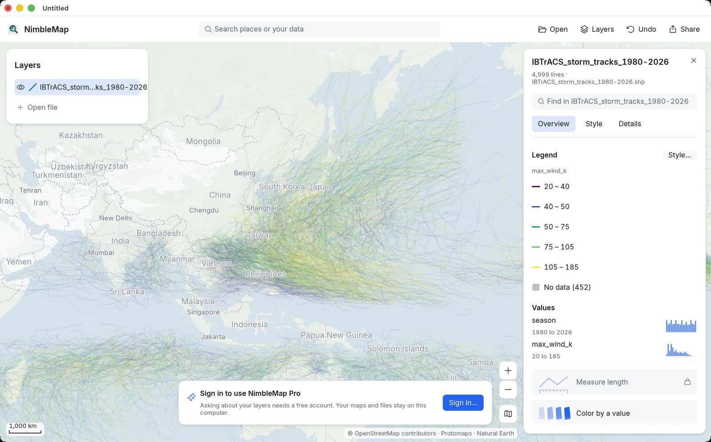

Free · Mac & Windows · offline
GeoPackage viewer
Open a GeoPackage (.gpkg) as a map in one drop. Free for Mac and Windows. One tidy file that can hold many layers — drag it in; files stay local.

How · .gpkg
Drag it open on Mac or Windows
Drag the .gpkg into NimbleMap, or double-click it. Layers appear in the list; turn them on and off, click features for attributes.
Why not a browser tab or QGIS
Free, local, and enough for a look
GeoPackage SERPs are still open to simple tools. QGIS can open a .gpkg, but you do not need a full GIS desk just to see what is inside. NimbleMap is the free offline GeoPackage viewer for Mac and Windows when you want drag-open and done.
Questions
Common questions
Is there a free GeoPackage viewer for Mac?
Yes. NimbleMap opens .gpkg with a double-click or a drag. Free for Mac and Windows.
GeoPackage viewer without QGIS?
Yes. No project or CRS setup — just open the file.
Does it work offline?
Yes. Your .gpkg never leaves your computer.
Can I open a GeoPackage (.gpkg) without QGIS?
Yes. Drag the .gpkg into NimbleMap; no project setup required.
Is there a free GeoPackage viewer?
Yes. NimbleMap is free on Mac and Windows, with a browser try.
Does opening GeoPackage upload my data?
No. Files stay on your computer or in the local browser try.
Multiple layers inside one GeoPackage?
Open the .gpkg and use the layers NimbleMap lists from the file.
Account required?
No for viewing. Optional account only for Pro Ask.
Offline GeoPackage?
Yes. Viewing is local.
GeoPackage vs Shapefile?
GeoPackage is a single-file container; Shapefile is a multi-file set. NimbleMap opens both.
Also see: Shapefile viewer · GeoTIFF viewer · GeoJSON viewer · GeoPackage viewer · NetCDF viewer · CSV to map · vs QGIS